A new kind of password. A lock with no keypad that reads four hand gestures and the exact angle each one turns to, and opens only when all four are right. I took it from the idea to a working device, and I designed the interaction people actually perform.
A device exploring a new approach to passwords: a smart-lock structure that uses machine learning to recognise gestures. Each small circular ring corresponds to the angle of a finger and is driven by its own servo. When all the gestures are correct, the lock opens.
A keypad password is something the user knows, which means anyone standing behind them can know it as well. This one is something the user performs, in the air, at a distance. The distinguishing information is which gesture is made, and how far it is turned, so the password is four gestures each carrying a continuous angle, and all four have to land.
The design logic is that each gesture corresponds to a circle, and the rotation angle of the gesture controls the actual rotation of that circle. When all four gestures are rotated to their specified angle, the iris structure rotates open and the internal push rod pushes the locked item out.
The interface is the mechanism. No screen reports progress, because the ring is the readout: it tracks the user's hand continuously, so the distance still to travel is visible in the object itself and can be corrected in real time.
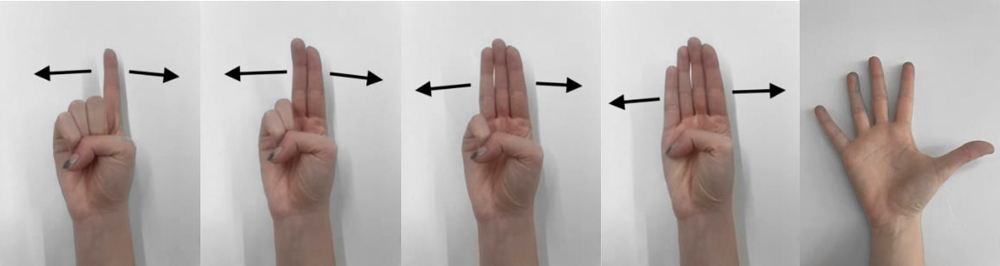
Four tools, five stages, one continuous path from a hand in the air to a servo horn holding a specific number of degrees.
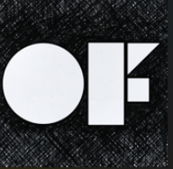
01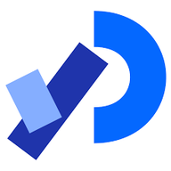
02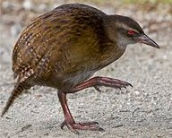
03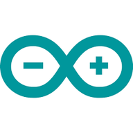
04Stage three is where the lock gets its resolution. A single classifier would have produced a device with four states. Running classification and regression on the same input stream gives every gesture a continuous value alongside its identity, so the password space is four gestures multiplied by an angle rather than four gestures alone.
The device consists of four SG92R micro servos, one MG996R servo, one MG995R servo, and an Arduino, addressed through a PCA9685 driver.
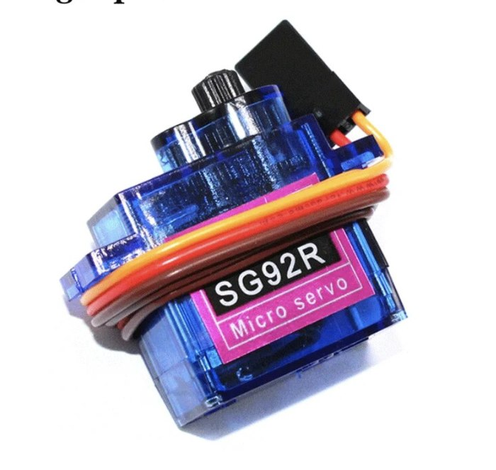
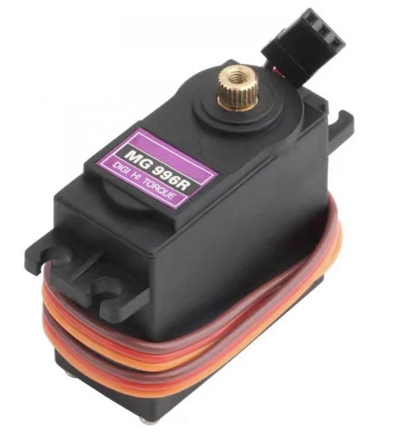
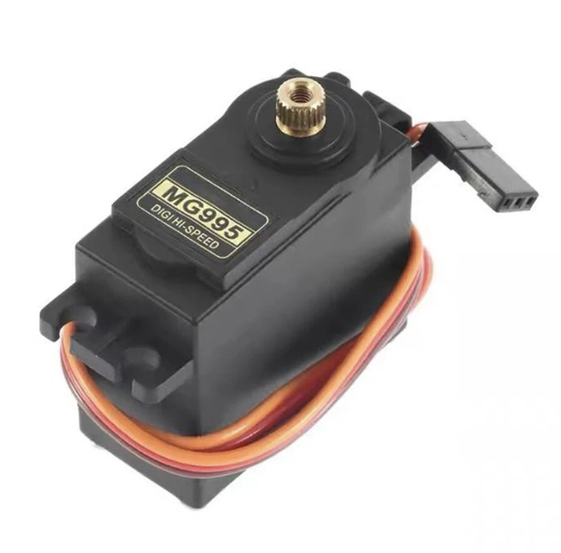
Wekinator emits a new prediction many times a second, and the microcontroller has to act on each one without ever getting confused about where a message starts. The format that solves this is deliberately the dumbest one available: a fixed four-byte frame, no delimiters, no handshake, nothing to parse.
Fixed width is what makes Serial.available() >= 4 a sufficient test for a complete message. Zero-padding removes the only ambiguity a variable-length angle would introduce, so the firmware never has to look for a terminator, never blocks waiting for one, and cannot desynchronise from a dropped byte for longer than a single frame.
#include "PCA9685.h"
#include <Wire.h>
ServoDriver servo;
const int servoR1Pin = 1;
const int servoR2Pin = 2;
const int servoR3Pin = 3;
const int servoR4Pin = 4;
const int servoDoorPin = 5;
const int servoR6Pin = 6;
const int minValidAngle = 20;
const int maxValidAngle = 180;
void setup() {
Wire.begin();
Serial.begin(9600);
servo.init(0x7f);
}
void loop() {
static bool servoDoorMoved = false;
if (Serial.available() >= 4) {
char classification = Serial.read();
int angle = 0;
for (int i = 0; i < 3; i++) {
char digit = Serial.read();
if (digit >= '0' && digit <= '9') angle = angle * 10 + (digit - '0');
}
switch (classification) {
case '1': servo.setAngle(servoR1Pin, angle); break;
case '2': servo.setAngle(servoR2Pin, angle); break;
case '3': servo.setAngle(servoR3Pin, angle); break;
case '4': servo.setAngle(servoR4Pin, angle); break;
case '5':
if (!servoDoorMoved) {
// open once, then latch: predictions keep arriving after the
// sequence completes and the iris must not be driven again
servo.setAngle(servoDoorPin, 180);
delay(5000);
servo.setAngle(servoR6Pin, 179);
delay(2000);
servo.setAngle(servoR6Pin, 90);
servoDoorMoved = true;
}
break;
}
}
}The mechanism was drawn, sectioned and laser cut, then assembled around the servo positions.
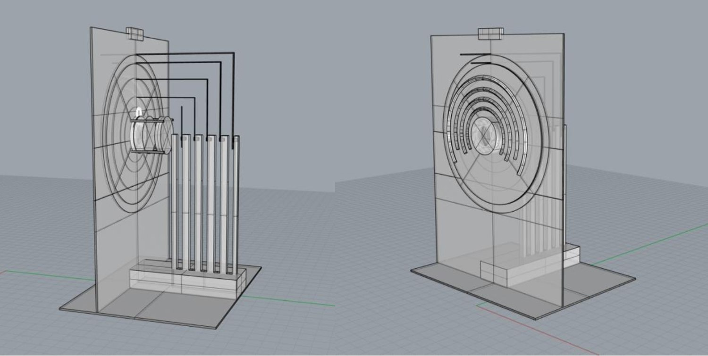
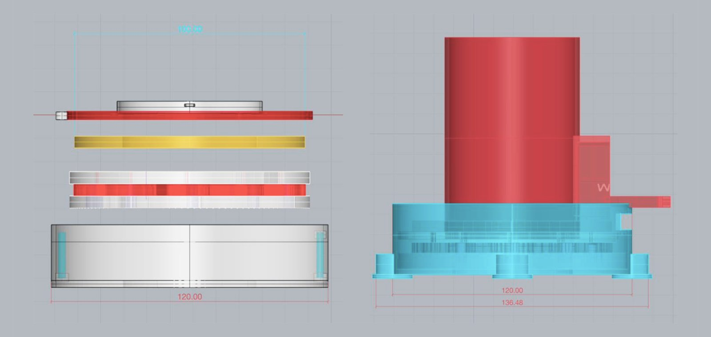
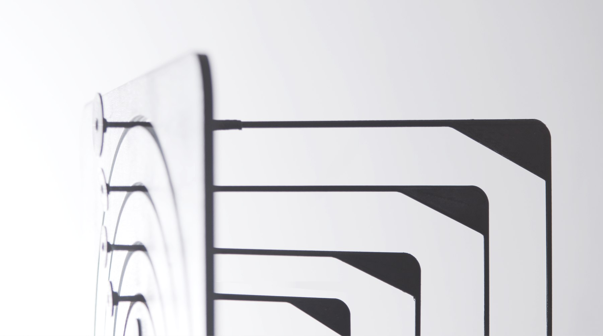
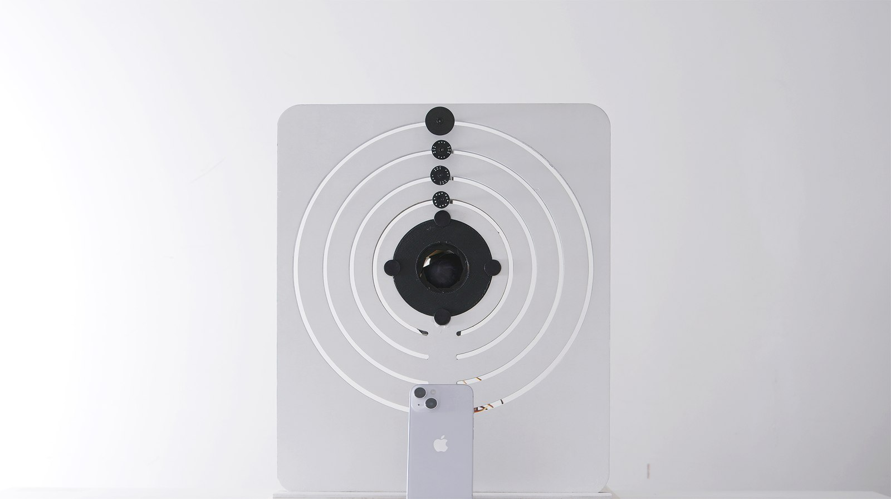
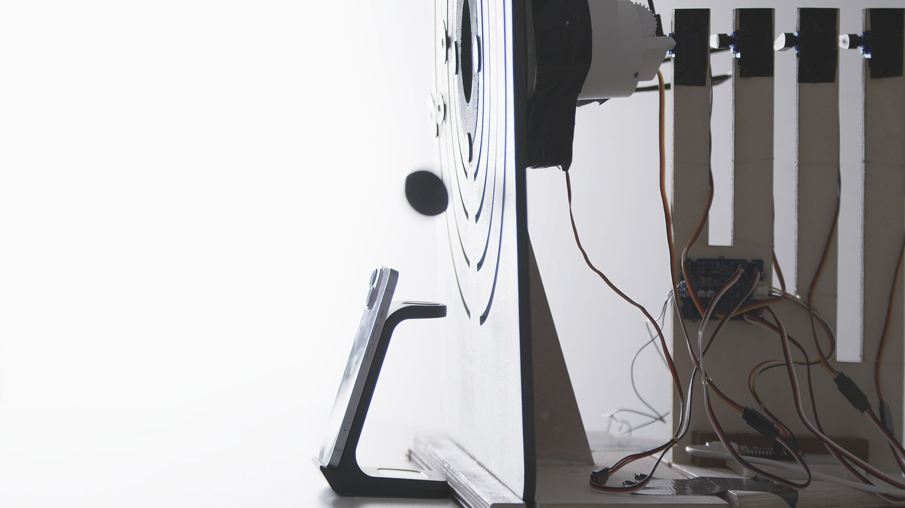
Each gesture, held in front of the device, moves its own ring.
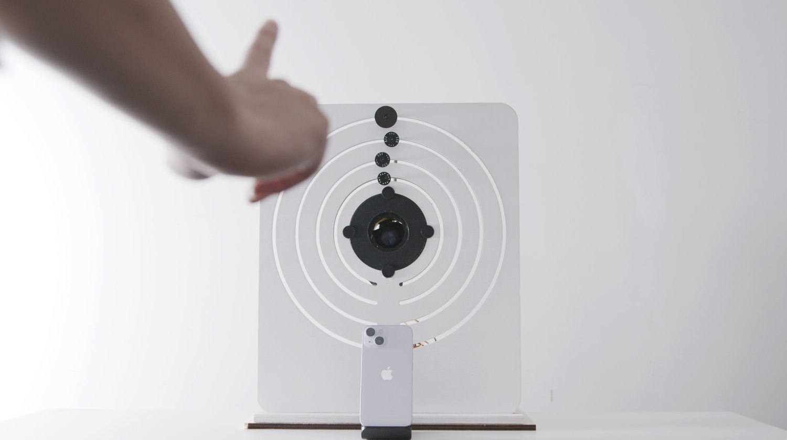
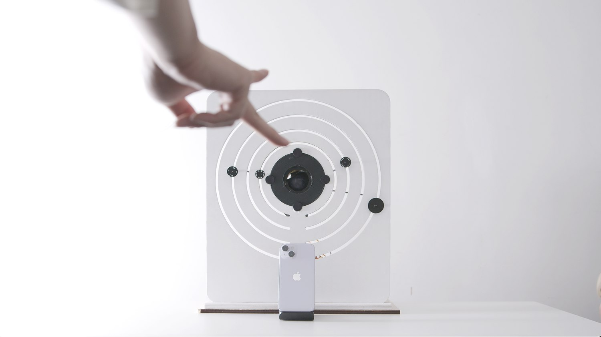
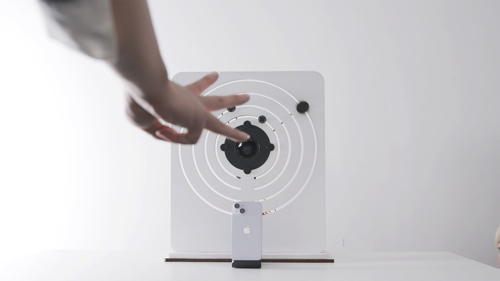
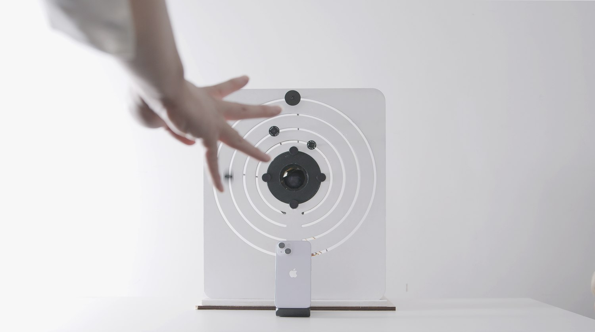
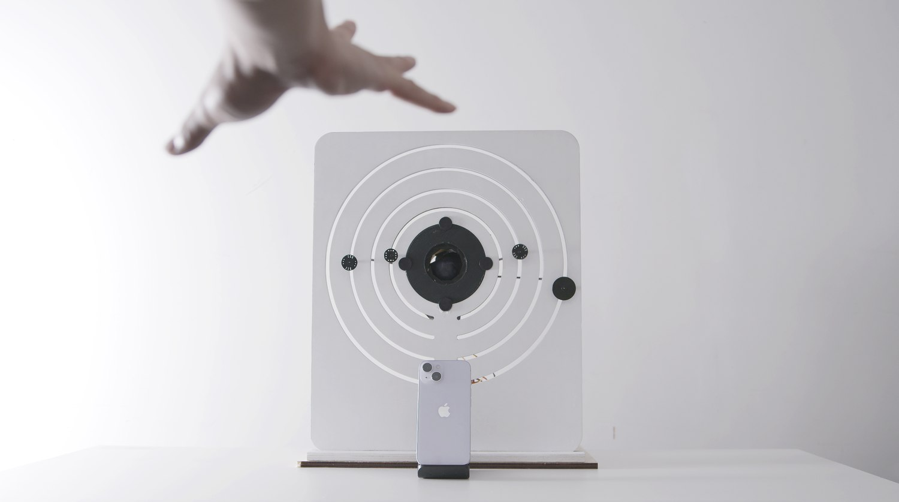
The five clips below are the sequence in order, shown and tested with people who had never used the device before.
Each gesture unlocks one layer. The first gesture, held at its angle, releases the first lock; the second releases the second, and so on through the fourth. The fifth gesture, the open palm, commits the sequence: the iris rotates open, the push rod extends, and the ball drops out. Nothing happens at all until every layer before it has been cleared, so a wrong angle anywhere in the chain simply leaves the mechanism where it was.